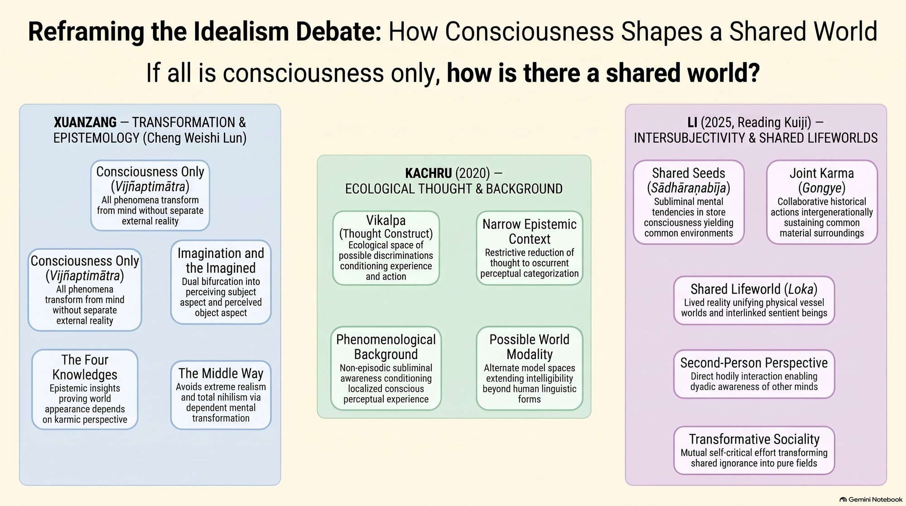
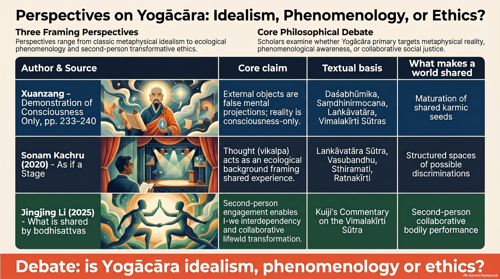
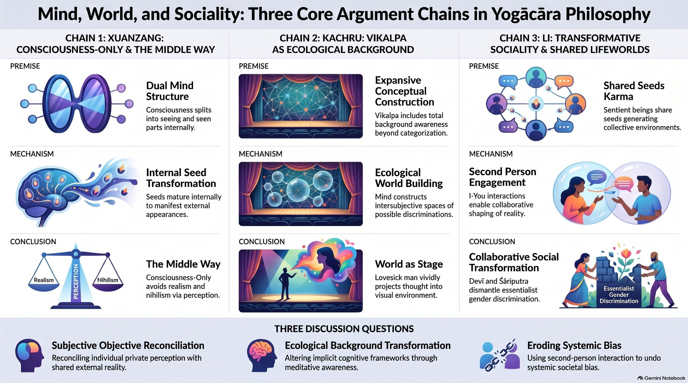

The Classroom · Consciousness in Buddhism · Week 10 · 19 Nov 2026
Reframing the Idealism Debate I: A Shared World
If everything is consciousness only, how do we share a world? Xuanzang lays out the proofs and the first objections, Kachru argues that vikalpa can name the stage a world appears on and not only the act of conceptualising, and Li reads Kuiji's shared lifeworld as something built, and changed, together.
1 At a glance 30 seconds
Key questions
- What exactly does 'consciousness only' deny, and what does it leave standing?
- If objects are transformations of consciousness, why do different beings seem to share one world?
- Is vikalpa only conceptual categorisation, or also the background against which a world shows up?
- What is shared when bodhisattvas and ordinary beings live in 'one' world, and can it be changed together?
Key concepts
Vijñaptimātra (consciousness only)
Real selves and dharmas do not exist apart from what consciousness transforms into; 'only' does not deny mental activities or emptiness. — Xuanzang, pp. 233–234
Imagination and the imagined
Consciousness transforms into a seeing part (imagination, grasping) and a seen part (the imagined, grasped). — Xuanzang, p. 233
Four knowledges
Bodhisattva insights supporting consciousness only, e.g. the same thing is perceived differently by ghosts, humans and gods according to karma. — Xuanzang, pp. 234–236
Vikalpa
Usually 'conceptual thought'; Kachru recovers wider senses: construction, a phenomenological background, and a possible world. — Kachru (2020)
Narrow epistemic context
The habit of reading Buddhist theories of thought only as accounts of how perception becomes conceptual judgement. — Kachru (2020)
Shared seeds and joint karma (gongye 共業)
Seeds held in common in the store consciousness and actions performed jointly that sustain a shared lifeworld. — Li (2025), reading Kuiji and the CWSL
Second-person perspective
Experience of the 'you' in bodily interaction; for Li it sustains the interdependence of the I and the we. — Li (2025), after Garfield
Tap a concept for its definition.
What you get out of it
- 'Consciousness only' is a claim about what exists apart from consciousness, framed as the Middle Way, not a simple denial of the world.
- A shared world can be explained without external objects: through common karma and seeds, a common background, and interpersonal practice.
- Kachru shows the idealism debate depends on what we take 'thought' to be; widen vikalpa and the debate changes shape.
- Li turns metaphysics into ethics: if the shared world is jointly made, it can be jointly transformed, including injustices like sexism.
Cases and evidence
- Ghosts, humans and gods see different things Xuanzang, p. 234
The first of the four knowledges: one and the same thing appears differently according to differences of karma. - Dreams Xuanzang, objections and replies
Objects that seem fixed in place and time but are only mental; we fail to see waking objects as mind only because we have not yet awakened. - Ratnakīrti's lovesick man Kachru (2020)
Intense thought (vikalpa) of his beloved makes him 'see' her as a real particular: thought ending in perception. - The Devī and Śāriputra Li (2025)
In the Vimalakīrti Sūtra the Devī playfully swaps forms with Śāriputra, which Li reads as a model of jointly correcting sexism.
The readings
| Xuanzang (1999) | Demonstration of Consciousness Only, ch. VII 'Consciousness Only' (trans. Francis Cook, Three Texts on Consciousness Only, BDK) · pp. 233–240 The core arguments, scriptural and rational, for consciousness only, and the first replies to objections. |
| Sonam Kachru (2020) | As if a Stage: Towards an Ecological Concept of Thought in Indian Buddhist Philosophy · Journal of World Philosophies 5: 1–29 Vikalpa can name the stage on which a world appears, not only the act of conceptualising it. |
| Jingjing Li (2025) | What is shared by bodhisattvas and their target audience? Second-person experience and transformative sociality in Chinese Yogācāra · Journal of Buddhist Philosophy 7: 29–52 Kuiji's shared lifeworld rests on I-we interdependence, so it can be transformed together. |
Where this fits in the course
Weeks 8 and 9 built Xuanzang's model of eight consciousnesses: the store consciousness, manas and the six sense consciousnesses, with Jiang's 'qualified metaphysical idealism' and the remote object. This week asks the question that model raises: if all is consciousness only, how is there a world we share? Xuanzang argues the thesis, Kachru widens what 'thought' (vikalpa) can mean, and Li reads Kuiji on a shared, transformable lifeworld. It sets up Week 11 on Buddhist illusionism and the two modernity weeks, where Li's transformative sociality returns in humanistic Buddhism and gender.
- 1Buddhist Philosophy of Consciousness in its Historical Context
- 2Consciousness as Dharma: Abhidharma Taxonomy in the Kośa
- 3Sarvāstivāda Epistemology: Does the Eye See?
- 4Sarvāstivāda Metaphysics: Temporality
- 5The Yogācāra Refutation of Early Buddhist Realism
- 6Early Chinese Yogācāra I: Paramārtha's Philosophy of Mind
- 7Early Chinese Yogācāra II: Consciousness and Tathāgatagarbha
- 8Later Chinese Yogācāra I: Redefining Consciousness
- 9Later Chinese Yogācāra II: Intentional Structure of Consciousness
- 10Reframing the Idealism Debate I: A Shared World
- 11Reframing the Idealism Debate II: Buddhist Illusionism
- 12Yogācāra in Modernity: Humanistic Buddhism
- 13Yogācāra in Modernity: Gendering Buddhist Modernism
2 Listen and look
Two takes on the same readings: pick the length that fits your commute.



3 Test your understanding
4 quick questions, then 2 to answer in your own words. Nothing is saved or sent.
According to Xuanzang, what does the word 'only' in 'consciousness only' deny?
'Only' denies real selves and dharmas apart from consciousness, not mental activities or emptiness, which is why it is called the Middle Way.
Which example belongs to Xuanzang's four knowledges?
The first knowledge: perception differs with karma, so objects cannot exist as they appear independently of consciousness.
What does Kachru call the framework he wants to move beyond?
It reads vikalpa only as the step from non-conceptual perception to conceptual judgement.
For Li, what sustains the interdependence of the I and the we?
Following Garfield, Li argues the second-person perspective in bodily interaction links personal and shared lifeworlds.
How would Xuanzang answer someone who says: 'We all see the same mountain, so it must exist outside our minds'?
He would say the sameness is explained by similar transformations of consciousness from shared karmic seeds, as in Li's reading of joint karma, not by an external object. The dream analogy shows apparent fixity and publicity do not prove externality, and the four knowledges show the same 'thing' appears differently to different beings.
Is 'idealism' a good label for Yogācāra after this week's readings?
Partly. Xuanzang denies real objects apart from consciousness, which looks idealist, but Kachru shows vikalpa can mean a background or world rather than private ideas, and Li frames the shared world as intersubjective and practical. 'Idealism' captures the ontology but misses the phenomenological and ethical dimensions.
Podcasts and infographics are generated with Google NotebookLM from the course readings; the brief and quiz are drafted with Claude from the readings and syllabus. Everything is checked and curated by me.